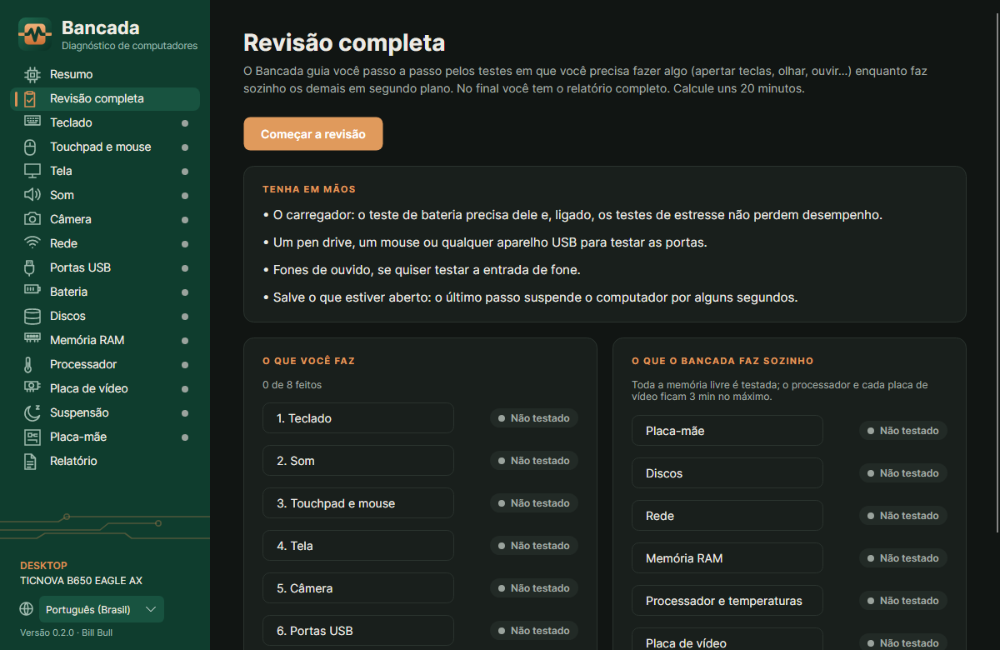
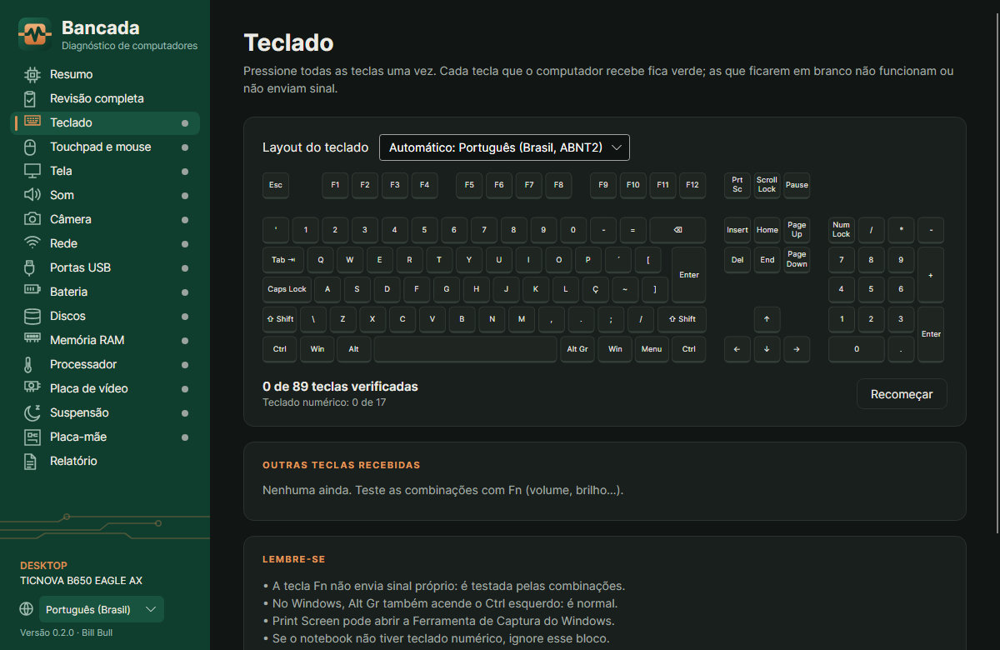
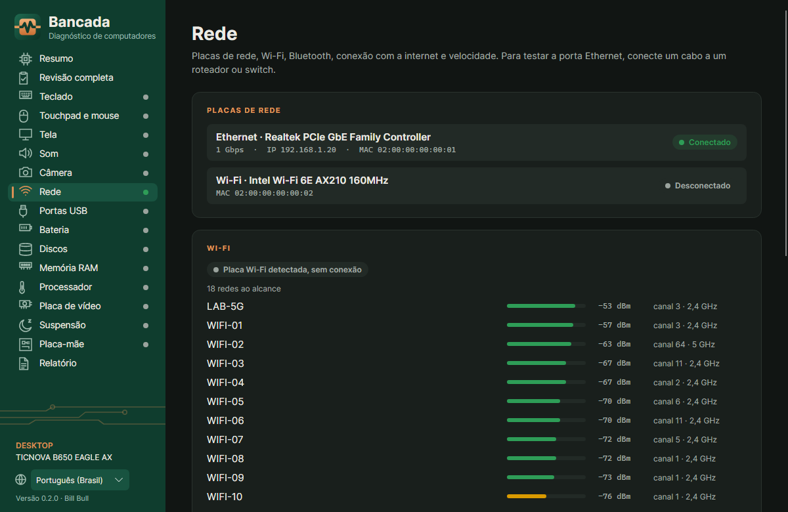
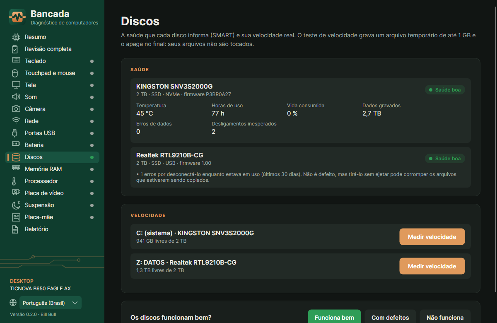
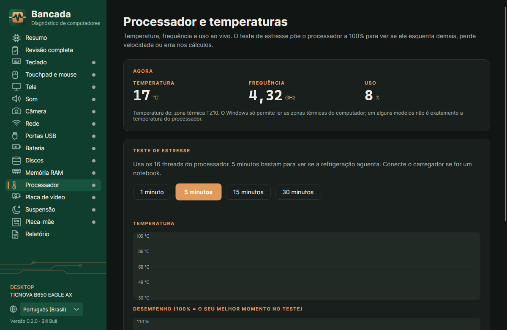
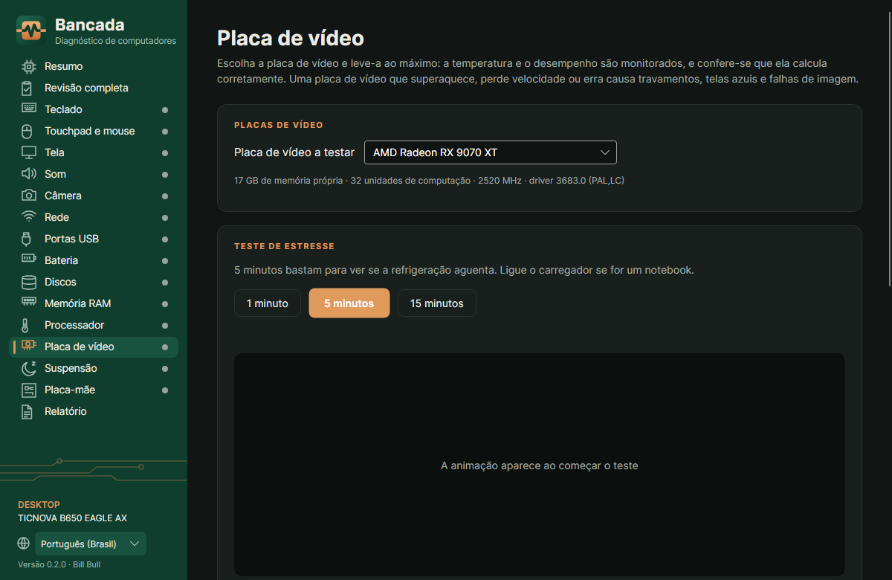
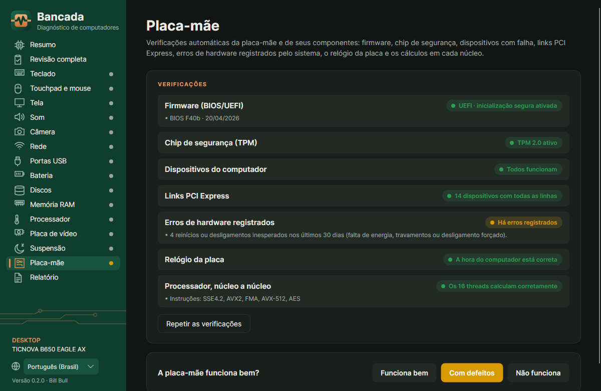
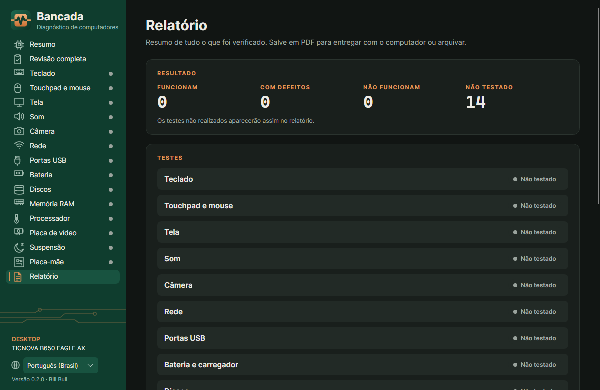

Guia de uso da Bancada
Antes de começar
- Baixe o executável do seu sistema na última versão. Você pode levá-lo num pendrive: não é instalado e não deixa nada no computador além das suas configurações (idioma e teclado).
- Abra-o no computador que vai revisar.
- Windows: clique duas vezes. Na primeira vez pode aparecer «O Windows protegeu o computador»: clique em Mais informações › Executar assim mesmo.
- Linux:
chmod +x Bancada-linux-x64 && ./Bancada-linux-x64.
- Tenha à mão: o carregador (se for notebook), um pendrive ou mouse USB para as portas e, para testar a entrada de fone, um fone de ouvido.
- Permissões. Quase tudo funciona como usuário comum. Como administrador (Windows) ou com
sudo(Linux) você vê também o número de série, os módulos de RAM e o SMART completo dos discos SATA.
O idioma é escolhido na parte de baixo da barra lateral (ícone do globo) e fica salvo.
A tela principal
À esquerda fica a lista de testes. O ponto colorido ao lado de cada um indica o veredito: Funciona bem, Com defeitos, Não funciona ou não testado. No final de cada teste há uma barra para marcar o veredito; nos automáticos ele vem sugerido e você pode mudá-lo.

O Resumo mostra o que o computador tem: marca, modelo e número de série, tipo (notebook, desktop, all-in-one, mini PC), processador, RAM e slots ocupados, placas de vídeo, discos e sua saúde, bateria, placa-mãe e BIOS.
Revisão completa (guiada)

Clique em Começar a revisão. A Bancada guia você passo a passo pelos testes em que é preciso fazer algo: teclado → som → touchpad → tela → câmera → USB → bateria → suspensão. Enquanto isso, em segundo plano e um após o outro, faz os automáticos: placa-mãe → discos → rede → memória → processador → cada placa de vídeo. O painel de baixo mostra o andamento.
- Os testes de estresse esperam você terminar o de som, para que o barulho da ventoinha não atrapalhe.
- Você pode pular um passo; o que não for testado aparece como «Não testado» no relatório.
- O último passo suspende o computador por alguns segundos: salve o que estiver aberto.
- Conte com uns 20 minutos. Ao terminar, clique em Terminar e ver o relatório.
Testes um a um
Teclado

Pressione cada tecla uma vez: as que chegam ficam verdes; as que ficam sem cor não funcionam ou não enviam sinal. O layout segue o idioma e o teclado do sistema; você pode escolher outro na lista (espanhol, latino-americano, EUA, Reino Unido, Portugal, Brasil ABNT2, alemão, francês e italiano). As teclas multimídia (combinações com Fn) aparecem em «Outras teclas recebidas». No Windows, Alt Gr acende também o Ctrl esquerdo, e Print Screen pode abrir a Ferramenta de Captura: é normal.
Touchpad e mouse
Mova o ponteiro pela área até preenchê-la. Se em algum lugar ele parar ou pular, essa parte do touchpad está danificada: passe também pelas bordas e cantos. Teste clique esquerdo, direito e do meio, duplo clique, arrastar, a roda ou a rolagem com dois dedos, os botões laterais, a tela sensível ao toque e a caneta, se houver.
Tela
Começar teste de tela enche a tela de cores sólidas, degradês e grade. Clique, Espaço ou → avança; ← volta; Esc sai. Procure pixels mortos ou travados, manchas, vazamentos de luz nas bordas, faixas nos degradês e brilho irregular.
Som
Cada botão toca de um lado só; a varredura de graves a agudos serve para ouvir se algo vibra, zumbe ou chia. Ouvir o microfone mostra o nível ao vivo (fale ou bata palmas) e Gravar 5 segundos e reproduzir deixa você ouvir o que ele captou. Depois conecte um fone e repita para testar a entrada.
Câmera
Ligue cada câmera e veja se a imagem está nítida, com cores normais e sem cortes. Se sair preta, verifique a tampa de privacidade ou a tecla que a desativa. A imagem nunca é salva nem sai do computador.
Rede

Lista as placas físicas com a velocidade do link, o Wi-Fi com as redes próximas (sinal, canal e banda) e o Bluetooth. A conexão é verificada passo a passo (roteador → DNS → internet → site seguro) para ver onde ela cai. Medir velocidade faz 10 s de download e 10 s de upload com os servidores da Cloudflare. Para testar a porta Ethernet, conecte um cabo a um roteador ou switch.
Portas USB
Conecte um pendrive, um mouse ou qualquer aparelho em cada porta, uma de cada vez: cada porta que responde é marcada com sua velocidade real. Se um aparelho USB 3 conectar em velocidade USB 2, teste outro cabo; se nada mudar, o conector da porta pode estar danificado. Mouse e teclado sempre funcionam em USB 1 ou 2.
Bateria e carregador
Mostra a capacidade de fábrica e a atual, a saúde, os ciclos e o consumo ao vivo.
- Teste do carregador: desconecte e reconecte seguindo os passos; verifica carregador, cabo e conector.
- Teste de descarga: com o carregador desconectado, mede quanto a bateria dura de verdade. Você escolhe o que o computador faz (em repouso com a tela ligada, navegando, vendo vídeo ou em carga máxima), quando parar (por tempo ou ao chegar a uma porcentagem) e o brilho. Detecta quedas bruscas da porcentagem (células ruins) e um indicador descalibrado. Faça vários com usos diferentes e o relatório os reúne numa tabela de autonomia.
Discos

Saúde SMART de cada disco (temperatura, horas, vida útil consumida, setores danificados), erros de leitura e gravação registrados pelo sistema e velocidade real de leitura, gravação e leitura aleatória de 4 KB. O teste de velocidade grava um arquivo temporário de até 1 GB e o apaga no final: seus arquivos não são tocados.
Memória RAM
Enche a memória livre com 8 padrões e verifica se lê exatamente o que foi gravado. Um único erro significa que um módulo está com defeito; teste os módulos um por um para descobrir qual. Com o sistema rodando só dá para testar a memória livre: para testá-la inteira, a Bancada abre o Diagnóstico de Memória do Windows ou indica como iniciar o MemTest86+ no Linux.
Processador

Temperatura, frequência e uso ao vivo. O teste de estresse usa todos os threads e vigia se esquenta demais, se perde desempenho pela temperatura e se algum cálculo sai errado. 5 minutos bastam para ver se a refrigeração aguenta; se for notebook, conecte o carregador.
Placa de vídeo

Escolha a placa pelo nome (dedicada, integrada ou qualquer outra) e leve-a ao máximo: temperatura e desempenho são monitorados e seus cálculos são verificados. Verificar a memória de vídeo procura falhas de VRAM, as que causam riscos e pontos coloridos. Usa OpenCL, que vem com os drivers da NVIDIA, AMD e Intel; no Linux pode ser preciso instalar o pacote OpenCL da sua placa.
Suspensão
Suspende o computador e verifica se ele volta bem: quanto tempo dormiu, se a rede se recupera e se algum dispositivo parou de funcionar. Em computadores com suspensão moderna, acorde-o você com uma tecla, como faria o cliente. Se ele não voltar e for preciso forçar o desligamento, ao abrir a Bancada de novo isso é marcado como falha.
Placa-mãe

Verificações automáticas: firmware e inicialização segura, chip TPM, dispositivos com falha ou sem driver, links PCI Express com menos lanes do que deveriam, erros de hardware registrados, relógio da placa (bateria CMOS) e cálculo correto em cada núcleo.
O relatório

Reúne todos os testes com suas medições, observações e vereditos. Adicione suas notas (estado físico, amassados, o que o cliente contou…) e clique em Salvar relatório em PDF: ele é salvo em Documentos e inclui o número de série do computador.
Problemas frequentes
| O que acontece | O que fazer |
|---|---|
| O Windows avisa que o programa não é seguro | O executável ainda não é assinado: Mais informações › Executar assim mesmo. |
| Não aparece a temperatura do processador no Windows | Alguns computadores só a informam a programas com driver próprio. O teste de estresse continua detectando perda de desempenho e erros. |
| «Não há nenhum driver OpenCL instalado» na placa de vídeo | Instale ou atualize o driver no site da NVIDIA, AMD ou Intel. No Linux: intel-opencl-icd, mesa-opencl-icd ou ROCm. |
| Não aparecem as redes Wi-Fi no Windows | Ative Configurações › Privacidade e segurança › Localização › Permitir que aplicativos da área de trabalho acessem sua localização. |
| No Linux não aparecem os dados SMART | Instale smartmontools e abra a Bancada com sudo. |
| No Linux não abre e pede libICE ou libSM | Instale libice6 e libsm6 (a interface em X11 precisa delas). |